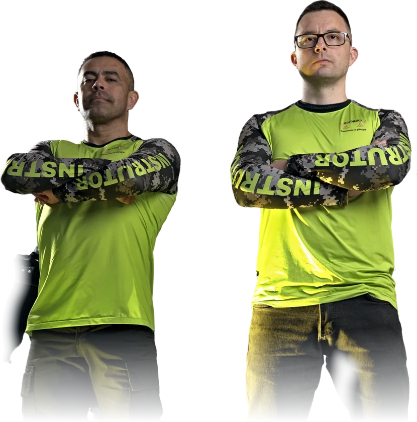

Do básico ao domínio da sua Big Trail, com Rodrigo Valter e Tiago Martins: estúdio, pista, drone, POV e 360° nas mesmas aulas.
Cada aula mostra o status da revisão. As alterações pedidas aqui chegam à Brandaz com o minuto exato da fala.